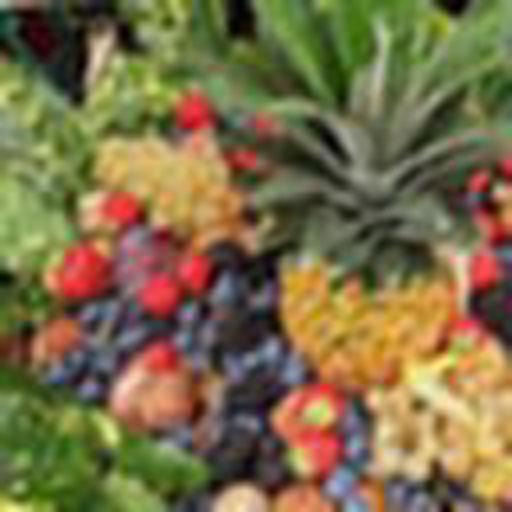
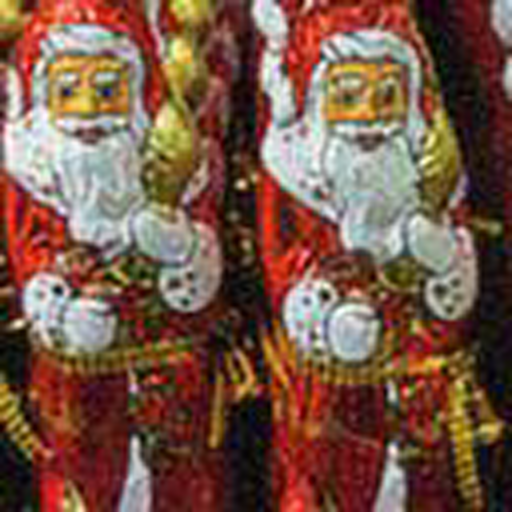

SSP-IR: Semantic and Structure Priors for Diffusion-based Realistic Image Restoration



Realistic image restoration is a crucial task in computer vision, and diffusion-based models for image restoration has garnered significant attention due to their ability to produce realistic results. However, due to the severity of image degradation and the uncontrollability of the diffusion model, diffusion-based restoration methods still have many challenges in the perceptual quality, semantic fidelity, and structure accuracy. To address these challenges, we introduce a novel image restoration method, SSP-IR. Following the principle of ``reconstruction as conditional generation", our approach aims to fully exploit semantic and structure priors from low-quality images to guide the diffusion model to generate semantically faithful and structurally accurate natural restoration results. Specifically, we integrate the visual comprehension capabilities of Multimodal Large Language Models (explicit) and the visual representations of the original image (implicit) to acquire accurate semantic prior. To extract degradation-agnostic structure prior, we introduce a Processor with RGB and FFT constrains to extract structure prior from the low-quality images, guiding the diffusion model and preventing the generation of unreasonable artifacts. Lastly, we employ a multi-level attention mechanism to integrate the acquired semantic and structure priors. The qualitative and quantitative results demonstrate that our method outperforms other state-of-the-art methods overall on both synthetic and real-world datasets.
We propose a diffusion-based realistic image restoration method with semantic and structure priors. To fully leverage the generative priors of pre-trained T2I models such as stable diffusion, we utilize semantic and structure information from low-quality images to guide the diffusion process in image restoration, aiming to generate realistic restoration results with coherent structures and clear details. The overall framework of our model is depicted in the figure. To generate more realistic results, we employ stable diffusion as the backbone. To make the generated results are more faithful, we control the diffusion process with the semantic and structure priors from input images. To get the rich and faithful semantic prior, we design the extraction module with two branches: one branch utilizes the inference capability of a pre-trained multimodal language model to predict potential restoration results from the LQ images, generating restored text embeddings. The textual prompts predicted by MLLM are explicit and can be reviewed and modified by the user to suit their needs. Additionally, to ensure the semantic fidelity of the generated predictions to the original LQ images, we design an image embedding branch. An image encoder extracts image embedding, and a Refine Layer is employed to correct the image embedding and mitigate the influence of degraded information in LQ images. Image embedding is implicit and can contain semantic information in the original image that cannot be expressed by text. The explicit text embedding and implicit image embedding collaborate as the semantic information to control the restoration process of the diffusion model. To get degradation-independent structure control, we employ a constrained Processor and a ControlNet module. The Processor extracts degradation-independent features from the low-quality image under the supervision of RGB loss and FFT loss at different scales, while the ControlNet module utilizes these features to generate structure control in the latent domain. Finally, the denoising U-Net utilizes text embedding, image embedding, and strcuture control through attention mechanism to generate high-quality restoration results.